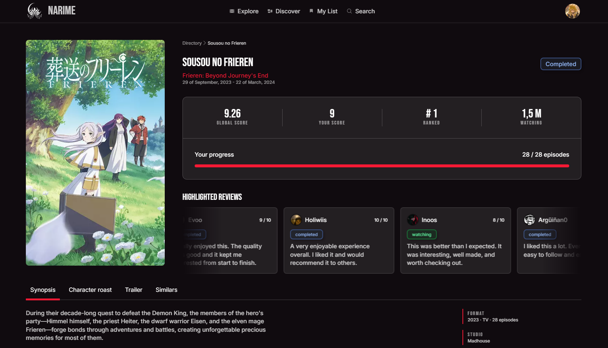
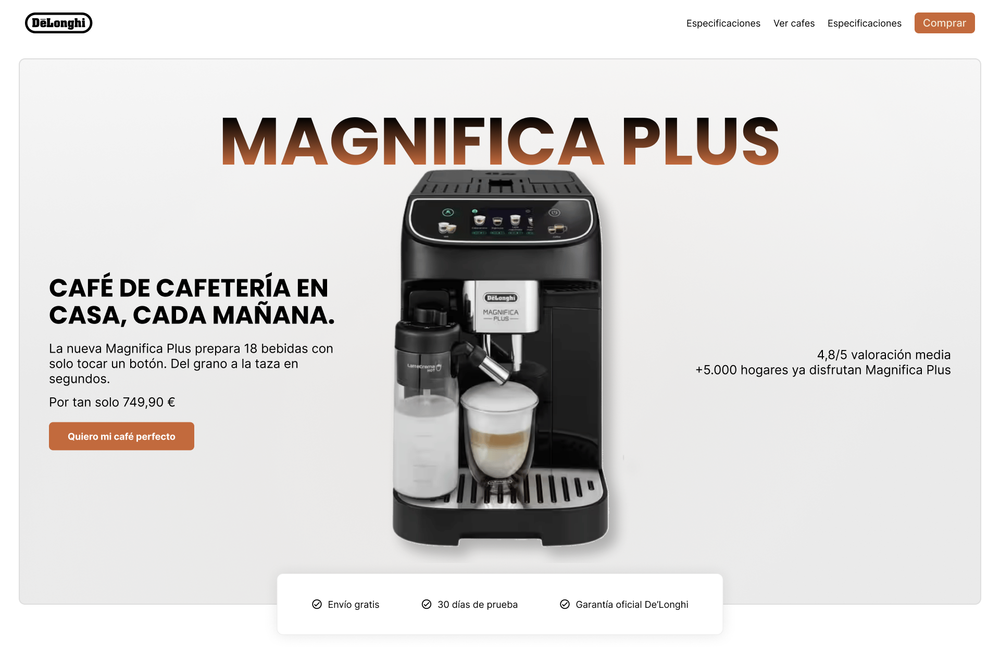
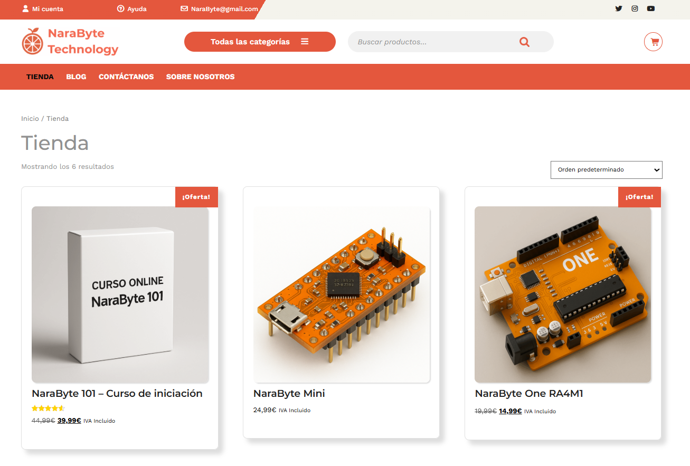
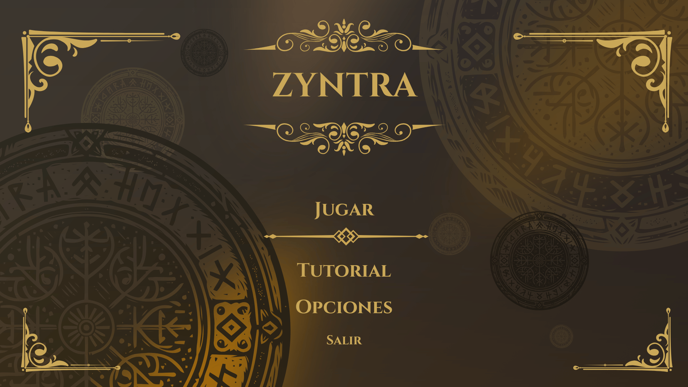

Paula Ramiro
Desarrolladora de software
Especializada en front-end con alta sensibilidad en UX UI
Mis proyectos destacados
-
Narime
ReactJS · TypeScript · UX/UI · HTML5 · SCSS
Desarrollada y diseñada unicamente por mi, es un tracker de anime desarrollado tras analizar MyAnimeList, tracker de anime muy anticuado, con una experiencia de usuario más cuidada y moderna. Diseñada roaiwrakdfasd asdiaosdiaosdi qwendqwjdkwj danmsdkwjk dq dkqj dkqwkd Tracker de anime inspirado en MyAnimeList con una experiencia de usuario más cuidada y moderna. Diseñada roaiwrakdfasd asdiaosdiaosdi qwendqwjdkwj danmsdkwjk dq dkqj dkqwkd

-

ReDesign Landing Conversión de Leads
ReactJS · TypeScript · UX/UI · HTML5 · SCSS
Tracker de anime inspirado en MyAnimeList con una experiencia de usuario más cuidada y moderna. Diseñada roaiwrakdfasd asdiaosdiaosdi qwendqwjdkwj danmsdkwjk dq dkqj dkqwkd Tracker de anime inspirado en MyAnimeList con una experiencia de usuario más cuidada y moderna. Diseñada roaiwrakdfasd asdiaosdiaosdi qwendqwjdkwj danmsdkwjk dq dkqj dkqwkd
-
Narabyte E-commerce
WordPress · WooCommerce · Gutemberg · Estudio del usuario
Tracker de anime inspirado en MyAnimeList con una experiencia de usuario más cuidada y moderna. Diseñada roaiwrakdfasd asdiaosdiaosdi qwendqwjdkwj danmsdkwjk dq dkqj dkqwkd Tracker de anime inspirado en MyAnimeList con una experiencia de usuario más cuidada y moderna. Diseñada roaiwrakdfasd asdiaosdiaosdi qwendqwjdkwj danmsdkwjk dq dkqj dkqwkd

-

Zyntra
Unity · C# · Teoría de Grafos · HTML5 · SCSS
Tracker de anime inspirado en MyAnimeList con una experiencia de usuario más cuidada y moderna. Diseñada roaiwrakdfasd asdiaosdiaosdi qwendqwjdkwj danmsdkwjk dq dkqj dkqwkd Tracker de anime inspirado en MyAnimeList con una experiencia de usuario más cuidada y moderna. Diseñada roaiwrakdfasd asdiaosdiaosdi qwendqwjdkwj danmsdkwjk dq dkqj dkqwkd
-
Smart Closset
Android Studio · Arduino · Java · Firebase · C++ · MQTT
Tracker de anime inspirado en MyAnimeList con una experiencia de usuario más cuidada y moderna. Diseñada roaiwrakdfasd asdiaosdiaosdi qwendqwjdkwj danmsdkwjk dq dkqj dkqwkd Tracker de anime inspirado en MyAnimeList con una experiencia de usuario más cuidada y moderna. Diseñada roaiwrakdfasd asdiaosdiaosdi qwendqwjdkwj danmsdkwjk dq dkqj dkqwkd
Sobre mi
Soy desarrolladora de software especializada en el desarrollo y diseño de aplicaciones web accesibles con ReactJS, TypeScript, HTML, CSS y Figma.
Cuento con el título de Técnologías Interactivas, que me ha dado una base técnica versatil que me permite adaptarme a multiples entornos y tecnologías con facilidad.
Además la mayor parte de los proyectos los he desarrollado en equipo siguiendo metodologías ágiles, lo que me enseñó a comunicar ideas técnicas, repartir tareas y sacar adelante entregas por sprints.
-
Grado en tecnologías interactivas
Septiembre 2021 - Julio 2025, (Universidad Politécnica de Valencia, Gandía)
Aquí obtuve la oportunidad de tocar de todo: desarrollo web, programación de microcontroladores con Arduino, apps móviles con Android Studio, videojuegos en Unity, sistemas de biometría con despliegue de servidores y montaje y configuración de redes de area local.
-
Master en Desarrollo frontend y ux ui
Noviembre 2025 - Junio 2026, (Escuela Superior de Arte y Tecnología, Valencia)
Con esa base amplia, decidí especializarme en lo que más me apasionaba: crear interfaces. Hice un postgrado en Front-end UX/UI donde profundicé en React, TypeScript, Figma, accesibilidad y SEO.